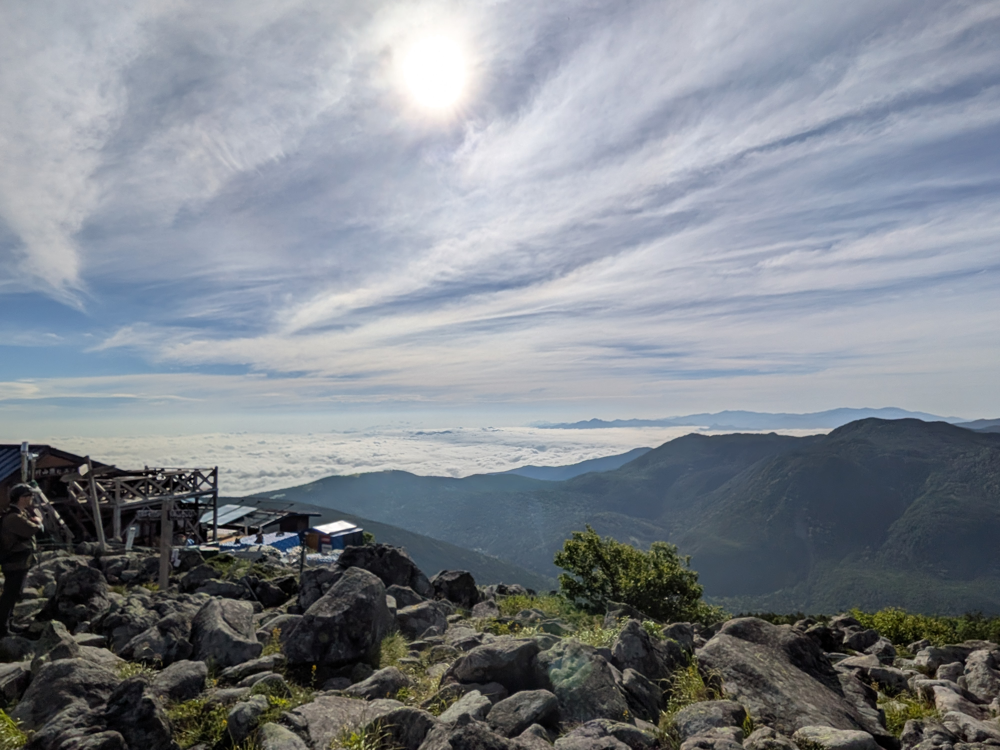
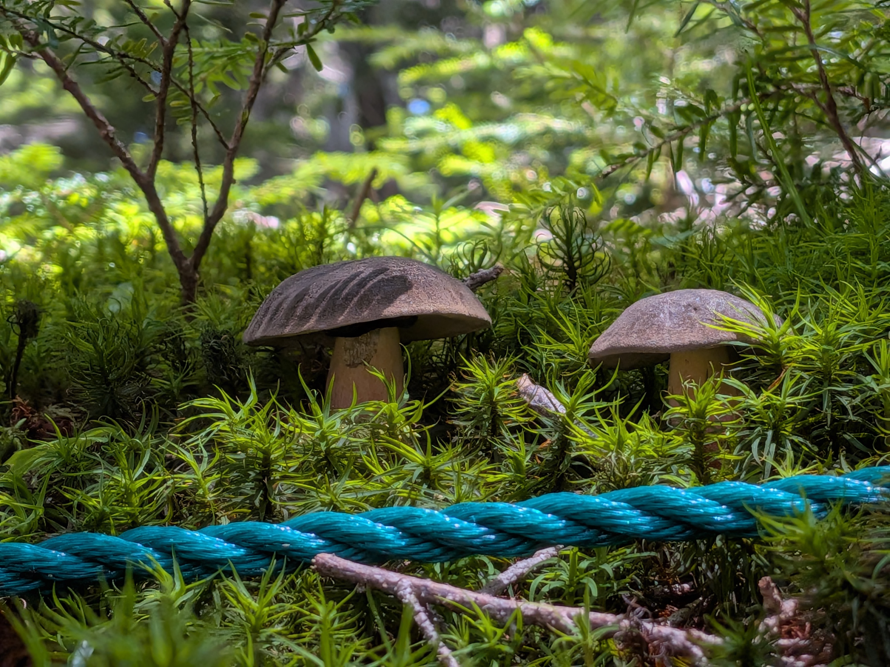
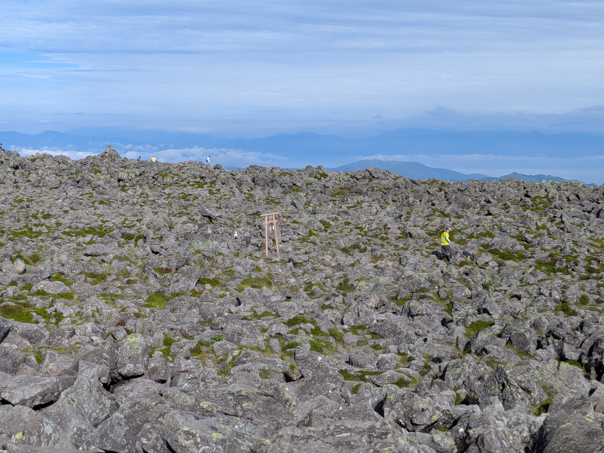

山行のハイライト

登山口〜樹林帯一歩足を踏み入れると、しっとりとした豊かな緑の苔の世界。足元には可愛らしいきのこが顔を出し、深呼吸したくなる清々しい森林浴から旅が始まります。
樹林帯を抜けると一気に視界が開け、眼下には見渡す限りの雲海！太陽の光を浴びて輝く雲と青空のコントラストは、息をのむ美しさでした。

蓼科山 頂上（2,531m）まるで別の惑星に降り立ったかのような巨大な岩が広がる360度大パノラマの山頂。中央に佇む蓼科神社奥宮の鳥居が神秘的な雰囲気を醸し出しています。
夏の朝、爽やかな風とともに登山口を出発。蓼科山特有の急登が続きますが、足元を見つめるとふかふかの苔や可憐な野草、木漏れ日に照らされた大小さまざまなキノコたちが迎えてくれました。静かな森林の空気を存分に吸い込みながら一歩ずつ標高を上げていきます。
急坂を登り詰め、山頂ヒュッテが見えてくると一気に視界が開けました。振り返るとそこにはどこまでも続く真っ白な「雲海」！山々の稜線が雲の海に浮かび上がり、頭上には透き通るような夏空が広がっていました。これまでの疲れが一瞬で吹き飛ぶ絶景です。
蓼科山の頂上は、一般的な山の頂とは異なり、大きな岩が一面に広がる非常に広大な台地になっています。岩から岩へ慎重に渡り歩きながら辿り着いた中央には小さな鳥居と祠。雄大な自然のパワーと達成感を全身で感じた、忘れられない夏休みの1日となりました。